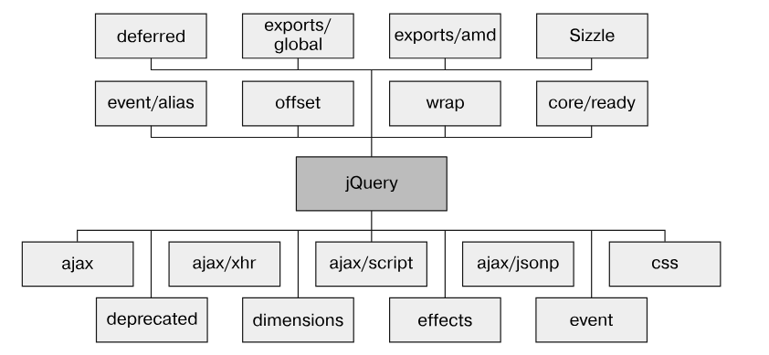

jQuery — бесплатная (под лицензией MIT) популярная библиотека JavaScript, созданная Джоном Резигом в 2006 году, разработанная для упрощения написания HTML-кода для клиентской стороны. Как заявлено на сайте jQuery, это быстрая небольшая библиотека JavaScript с богатыми возможностями. Она значительно быстрее делает такие вещи, как обход и обработка HTML-документа, обработка событий, анимации и Ajax, благодаря простому в использовании API, работающему с множеством браузеров. Сочетая универсальность и расширяемость, jQuery изменила способ, которым миллионы разработчиков и дизайнеров пишут JavaScript.
Это не самореклама. По данным BuiltWith (на 16.05.2024) jQuery-библиотека использовалась 64% верхнего миллиона сайтов интернета. На втором месте был Intersection Observer c 39%.
У страницы есть 3 фундаментальных аспекта - стиль, структура и поведение. jQuery позволяет более эффективно разделять структуру и поведение. Ниже приведен идеал организации HTML-страницы.
<html>
<head>
СТИЛЬ
<!--Элементы текущего стиля
и импортированные CSS-таблицы-->
</head>
<body>
СТРУКТУРА
<!--Структурные HTML-элементы-->
ПОВЕДЕНИЕ
<!-- Элементы текущего скрипта
и импортированные файлы скриптов-->
</body>
</html>Важно заметить, что скрипты поведения размещаются перед закрытием тега <body>. Зачем это делается? Элементы сценариев всегда должны размещаться в нижней части документы, чтобы:
Выбор между версиями jQuery зависит исключительно от того, для каких браузеров вы разрабатываете приложение. Так jQuery 1.x фокусировалась на совместимости с устаревшими браузерами, тогда как jQquery 2.x и выше отказалась от этой идеи. Большинство современных браузеров однако поддерживают jQuery новейших версий.
Другим различием между версиями jQuery выступает выбор между сжатой (minified) и несжатой версиями. Сжатая версия библиотеки отличается от несжатой по следующим пунктам:
Эти изменения образуют код, который тяжело читать и отлаживать, но имеет меньший размер. При разработке проекта полезно использовать несжатую версию, однако при запуске всегда следует предпочитать минимизированную.
На сегодняшний день существует общая практика обслуживать библиотеки и изображения с помощью CDN. Браузеры могут загружать фиксированный набор контента от хоста, обычно до 4 до 8 файлов одновременно. Т.к. файлы, которые обслуживаются с помощью CDN, предоставляются с другого хоста можно ускорить процесс загрузки, увеличив количество загружаемых файлов в период времени. Кроме того, многие современные браузеры задействуют CDN, поэтому очень высока вероятность, что нужная библиотека уже есть в кэше браузера юзера. Применение CDN для загрузки jQuery не гарантирует лучшую производительность в каждой ситуации, и потому нужна подбирать оптимальную конфигурацию для конкретно вашего веб-приложения.
В настоящее время существуют 3 CDN, на которые можно полагаться для включения jQuery:
Например, чтобы подключить сжатую версию jQuery с jQuery CDN, то нужно вставить на странице следующий код:
<script src="https://code.jquery.com/jquery-3.7.1.min.js"
integrity="sha256-/JqT3SQfawRcv/BIHPThkBvs0OEvtFFmqPF/lYI/Cxo="
crossorigin="anonymous"></script>Использование с CDN имеет свою цену. Сервер CDN может упасть и, если в кэше браузера юзера не сохранена библиотека, то jQuery на данной странице прекратит свою работу. На такой случай полезно использовать локальную версию, загруженную на случай неполадки с CDN. Эта предосторожность реализуется следующим образом:
<script>window.jQuery || document.write('<script src="javascript/jquery-1.11.3.min.js"><\/script>');</script>Исходный код jQuery следует формату Asynchronous module definition, AMD (асинхронное определение модуля). Формат AMD представляет собой предложение для определения модулей, где и модуль, и его зависимости могут быть загружены асинхронно. На практике это означает, что, хотя вы используете jQuery как уникальный и единственный блок, ее исходный код разбит на несколько файлов (модулей), как показано на схеме ниже:
Опишем наполнение некоторых из этих модулей:
Такая архитектура позволяет создавать кастомные сборки библиотеки, соращая ее размер исходя из того, какой ее фунционал реально используется на сайте. Для этого можно использовать Grunt:
git clone git://github.com/jquery/jquery.git
npm install
grunt custom:-deprecated,-effectsКогда библиотека включена, то объект window браузера приобретает свойство .jQuery. Таким образом можно проверять установлен ли jQuery. Но это не единственный способ:
window.jQuery = window.$ = jQuery;jQuery позволяет вызов методов цепочкой:
//вместо этого:
var obj = new Obj();
obj.method();
obj.anotherMethod();
obj.yetAnotherMethod();
//применяем цепочку методов:
var obj = new Obj();
obj.method().anotherMethod().yetAnotherMethod();Самым распространенным использованием функции jQuery() является выбор элементов DOM для их дальнейшего использования. В этом случае она принимает один обязательный параметр - селектор, и один необяазтельный - контекст. Фунция возвращает коллекцию элементов DOM, которые соответствуют заданным критериям.
jQuery использует те же селекторы что и CSS, в том числе более эффективные селекторы CSS3.
Когда мы выолняем, например такую команду var paragraphs = jQuery('p');, то библиотека ищет совпадающие элементы, начиная с корня документа, это может быть медленным процессом, поэтому часто полезно использовать контекст, т.е. var paragraphsInDiv = jQuery('p', 'div');. Таким образом, jQuery сначала пройдется по всем элементам <div>, а потом отыщет в каждом из них потомков <p>.
Примененная таким образом функция jQuery(...) возвращает "объект jQuery", "коллекцию jQuery" или "набор jQuery". Для большей формальности, объект jQuery - возвращаемый объект JS, который содержит набор соответствующих элементов, способных работать с методами, определенными jQuery.
Теперь нам необходим механизм, позволяющий дождаться загрузки элементов страницы DOM страницы, прежде чем взаимодействовать с ее элементами. Традиционно для этой цели использовался встроенный в JS обработчик onload:
window.onload = function() {
// здесь что-то делается
};Это позволяло начинать выполнения кода уже после полной загрузки страницы.
К сожалению, браузер не только задерживает выполнение кода onload до момента создания полного дерева DOM, но также ждет пока полностью загрузятся все внешние ресурсы и страница отобразится в окне браузера. Сюда также входят изображения и встроенные веб-страницы. В результате мы получаем серьезную задержку между моментом, когда они увидят страницу впервые и временем, когда будет выполнен сценарий onload. Хуже того, изображение или другой ресурс могут загружаться достаточно долго и юзерам придется ждать окончания загрузки, прежде чем станет доступным поведение элементов.
Куда лучшим подходом будет такой: ждать только того, чтобы структура документа была полностью проверена и браузер преобразовал HTML в результирующее дерево DOM перед выполнением сценария, отвечающего за поведение. jQuery позволяет дожидаться лишь загрузки дерева DOM, не дожидаясь загрузки внешних ресурсов:
jQuery(document).ready(function() {
// Ваш код здесь...
});
//более новый эквивалент:
jQuery(function(){
// Ваш код здесь...
})
Теперь разберем как это работает. Сначала мы оборачиваем объект document в функцию jQuery() и вызываем метод .ready(), которому функция передастся после того, как документ станет доступным для дальнейших манипуляций. Это значит, что внутри функции, переданной ready(), можно безопасно получить доступ к элементам нашей страницы.
Это техника может использоваться многократно в пределах страницы, и всякий раз браузер будет выполнять указанные функции в порядке их объявления.
В то же время, обработчик onload позволяет указать лишь одну функцию.
Если DOM уже был загружен, то код в callback-функции jQuery(document).ready(...) выполнится немедленно. Это значит, что данный метод не только ждет возникновения события DOMContentLoaded, но также проверяет есть ли у документа статус DOMContentLoaded. Это позволяет выполнять jQuery(document).ready(...) в консоли разработчика после уже произошедшего события загрузки DOM.
События загрузки в jQuery относятся к моментам, когда элементы веб-страницы загружаются и становятся доступными для взаимодействия. Основные события загрузки, на которые может реагировать jQuery, включают:
| Событие | Описание | Использование | Пример |
|---|---|---|---|
| ready | Это событие срабатывает, когда DOM полностью загружен и готов к манипуляциям, но до загрузки изображений и других ресурсов. | Используется для инициализации скриптов, когда элементы DOM уже доступны. | |
| load | Это событие срабатывает, когда весь контент страницы, включая изображения, стили и другие ресурсы, полностью загружен. | Обычно используется для выполнения кода после полной загрузки страницы. | |
| unload | Это событие срабатывает, когда пользователь покидает страницу (например, закрывает вкладку или переходит на другой URL). | Может использоваться для выполнения очистки или сохранения состояния перед тем, как пользователь покинет страницу. | |
| beforeunload | Это событие срабатывает перед тем, как пользователь покинет страницу. Вы можете использовать его для предупреждения пользователя о несохранённых изменениях. | Позволяет отображать диалоговое окно с предупреждением. | |